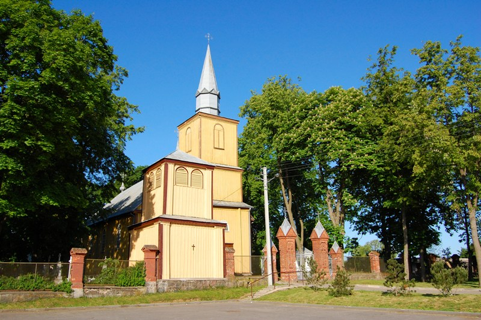

Скиргайло · Старчиковы · Масленниковы · Басовы · Чирковы — все роды нашей семьи в одном древе
110человек12поколений10фамилий7городов2страны
старых фотографий уже в древе
Лица нашего рода
Узнай своих предков · узнай свою родословную
Это общий семейный архив: его собирают все родные вместе. Фотографии, годы, имена, воспоминания и документы остаются в древе для детей и внуков.
✦ Как дополнить древо
Сайт открыт только для просмотра. Годы, имена, фото, воспоминания и документы присылайте тому, кто прислал вам ссылку, — их внесут в древо.
✦ Древо интерактивное
Каждый может дополнить его своей информацией: годы, имена, фото, воспоминания и документы.
Найдите себя, родителей или бабушку с дедушкой
Нажмите на карточку человека
Расскажите, что знаете: годы, имена, историю
Самое первое упоминание нашего рода, которое удалось найти — 1699 год
Ева, дочь Петра Скиргайло
Крещение Евы, дочери Петра Скиргайло и Ядвиги Ибяньской, 8 октября 1699 года, Антогине. Метрическая книга Вендзягольского костёла, LVIA ф. 1349 оп. 1 д. 11
Литовский государственный исторический архив (LVIA), ф. 1349 оп. 1 д. 11, кадр 6 · epaveldas.lt · запись обведена на скане
Древо
МасштабЦеликом
Древо очень широкое — смотреть его удобнее с компьютера. На телефоне листайте схему пальцем или нажмите −, чтобы увидеть её целиком.
Человек, история, дата или исправление — запись сразу увидят все родные
Наведите курсор на человека — подсветятся его родители, супруги и дети. Чтобы сдвинуть схему, зажмите левую кнопку мыши и тяните. Кнопка «Лупа» включает увеличительное стекло под курсором.
Лупа: нажмите на древо и подержите палец — появится увеличительное стекло, ведите им по карточкам. Коснитесь человека — откроется его карточка. Листайте схему пальцем, кнопкой − увидите её целиком.
вошли в род браком (без цветной полосы)бракбывший бракродство не доказано
Все фамилии древа (10): · · · · · · · · ·
История рода по векам
Рождения и кончины предков — от самых ранних записей до 1930 года. Нажмите на имя — схема покажет линию этого человека.
Воспоминания родных
Что удалось найти в открытых архивах
Отчёт ИИ-помощника · пополняется по мере новых находок
Что проверено в открытых архивах и базах (октябрь 2026). Каждая строка — источник и оценка надёжности. Казанского архива в открытых базах нет: метрики Марьина и Буинского уезда нужно запрашивать.
Оценка в последнем столбце: документпредположениене найдено.
Кто
Где искали
Результат
Оценка
Савечаны и Скиргайло XIX века
Geneteka — индексы Вендзяголы и Бобт 1800–1900 (браки 28 из 28; крещения 1800–1859 почти полностью)
Новые: Саломея Эмилиана (19.09.1823), дочь Антония и Богумилы Офман; Феликс Медекша (22.11.1843), внук по дочери Богумиле. Вторая семья в Савечанах: Ян Скиргайлло (сын Михала и Анели Дырда) ∞ 04.02.1845 Анеля Засимовская, сын Болеслав (13.10.1845) — вероятно, «Болеслав Иванович», землевладелец 1889 г. Индекс Вендзяголы обрывается: крещения после 1845, браки после 1853 — нет; поэтому крещение Осипа (ок. 1863) и брак его отца не найдены. Отдельного Антония 1815–1845 г. р. нет — вероятнее всего, отец Осипа — Феликс Антоний (1827).
предположение
Семьи жён: Шатыньские, Ганусовские и др.
Geneteka — индексы Вендзяголы (LVIA ф. 1349), 1690–1800 и 1848
Шатыньские выбраны полностью (36 крещений, 5 браков): родители Катажины Шатыньской по индексу не устанавливаются (книги — с 1699 г.); её вероятные родичи — Бартоломей и Франциск Шатыньские из Ибян, вероятные сёстры Эльжбета, Регина, Анна (предположение). Родители Анели Ганусовской — Антоний и Тереса (по записи брака 1848 г.). Сунгайло, Хрщоновичи, Офманы, Липкевичи, Урняж — не проверены (сервис ограничил запросы).
предположение
Скиргайло в XVI–XVII веках
Перепись войска ВКЛ 1528 (изд. 2003, Ковенский повет, с. 75–80); перепись 1567 (выборка litviny.net); Niesiecki, Kojałowicz, Żegota Pauli, АВАК тт. 7, 12–15, 24, 25, 30, 38; SGKP т. IX с. 33 и т. XV/2
Фамилия Скиргайло до 1699 г. не найдена ни в одном доступном источнике; первоисточник сведения о 1559 г. не обнаружен. АВАК т. 38 (1798): Прейшагола и Савечаны — «шляхетские околицы»; SGKP: Прейшагола — околица 549 дес. в 15 частях, Скиргайло — части Каупры и Юшкевичи.
не найдено
Скиргайло 1699–1800: проверка цепочки
Geneteka — полная выгрузка индексов Вендзяголы (LVIA ф. 1349, с д. 11) и Бобт (ф. 1347)
Самые ранние записи — 1699 г.: крещение Евы, дочери Петра Скиргайло и Ядвиги Ибяньской (Антогине), и брак Павла Скиргайло с Еленой Рафанович. Ян, крещённый 04.06.1718, умер 20.07.1720 — мужем Ружи был другой Ян. Томаш (19.12.1752) женился 11.01.1784 на Теофиле (Богумиле) Хрщонович, вдове Кирклевской; у них дети 1784–1794; брат Томаша Давид (1750) женат с 1786 на Петронеле Урняж. XVII века в индексе нет.
документ
Рождение Осипа (Иосифа) Осиповича, 1908
FamilySearch, плёнка DGS 007438199: Марьино (Покровская единоверческая ц., НА РТ ф. 4 оп. 176 д. 1342), кадры 314–322; Ишеево (д. 1343), кадры 504–523
Ни в книге Марьина, ни в книге Ишеева за 1908 г. записи нет. Возможно, крещён в Казанском римско-католическом костёле (НА РТ ф. 4 оп. 181 д. 5) или в Никифорове (приход имения Куприяновых).
предположение
Скиргайло XVIII века (Антогине, Вендзягола, Бобты)
Geneteka — индексы метрик Вендзягольского (LVIA ф. 1349) и Бобтского (ф. 1347) костёлов
Ян Скиргайло и Катажина Шатыньская — дети 1714–1718 в Антогине; их сын Ян (1718) — вероятно, муж Ружи Сунгайло; у Яна и Ружи сыновья Давид Адам (1750) и Томаш (1752). Томаш (1752), вероятно, — тот, кто ум. 1824 в Прейшаголе. Всего с 1700 г. в приходе 131 крещение, 14 браков, 10 смертей Скиргайло.
предположение
Савечанская ветвь Скиргайло (1754–1853)
Geneteka — индекс метрик Вендзягольского костёла, LVIA ф. 1349 оп. 1 дд. 20–22, 29; сканы на epaveldas.lt
Томаш (ок. 1754 – 22.04.1824) → Антоний Андрей (род. 14.11.1784, Савечаны) ∞ 25.01.1814 Богумила Офман → дети: Анджей Дамазий и Анеля (10.12.1814), Богумила (ок. 1819), Александр (29.11.1821; ∞1848 Анеля Ганусовская), Антонина (1825), Феликс Антоний (09.05.1827), Франциск (1829), Людвик (01.08.1831; ∞1853 Антонина Ганусовская). Что Антон, отец Осипа, — из этой семьи, — предположение.
предположение
Пётр Мартьянович Масленников — место
ru.wikipedia «Усинский район (Пермская область)»; Книга памяти Пермской обл. (permgaspi.ru/membook)
Усинский РВК — с. Большая Уса; в 1959 г. район вошёл в Куединский, где родилась Нина Петровна. 23 Масленникова в Книге памяти — уроженцы Куединского района. Вероятно, Пётр родился в округе Большой Усы и Ошьи (бывш. Осинский уезд Пермской губ.).
предположение
Мартьян Масленников; Бефаповы
Книга памяти Пермской обл. (~214 тыс. записей), Яндекс-архив, форум ВГД «Осинский уезд», веб-поиск
Мартьян Масленников и фамилия «Бефапова» (и варианты Бифапова, Бефанова и др.) не найдены.
не найдено
Юзеф (Осип), сын Антония; Анна Антоновна
Geneteka по всей Литве, 1846–1887
Не найдены: книги Вендзяголы и Бобт после ~1853 г. не проиндексированы. Деревня «Авгошноли» в современных списках Вандзёгальского и Бабтайского староств не найдена.
не найдено
Осип Антонович Скиргайло
Ведомость справок о судимости за 1903 г., кн. 1, № 7690 — https://archive.org/details/russianempirecertificatesofconviction1903volume1
«Скиргайло, Осип Антонов, крестьянин Ковенского уезда, Бобтовской волости, Вендзягольского общества, д. Авгошноли, 39 л.» — осуждён Казанской судебной палатой, приговор исполнен 19.12.1902. Вероятно, наш прапрадед: род. ок. 1863 под Каунасом.
предположение
Имение у с. Марьина
Журналы Тетюшского уездного земского собрания 1913 г. — https://archive.org/details/zhurnalytetjushskogouezdnogozemskogosobr56
Имение при селе Марьине Никифоровской волости принадлежало Владимиру Петровичу Куприянову (ум. 12.02.1913), затем вдове Марии Ивановне.
документ
Осип (Иосиф) Осипович Скиргайло
«Память народа»: ЦАМО ф. 33 оп. 690155 д. 100; ф. 33 оп. 686196 д. 2133; ф. 7845 оп. 530086с д. 1; ВК РТ д. 11001758 — https://pamyat-naroda.ru/heroes/person-hero30709882/
Род. 1908 в с. Марино Тетюшского р-на. Призван 25.09.1941 Буинским РВК, сержант. Медали «За отвагу» 14.04.1944 и 06.10.1944. Выбыл в госпиталь 22.12.1944. Наградной лист: наводчик 45-мм орудия, русский, член ВКП(б), ранен 10.03.1942 и 05.02.1943, контужен 01.07.1944; бои у Яунелгавы (Латвия).
документ
Анна Антоновна Липкевич, урожд. Скиргайло
ЦГА Москвы ф. 609 оп. 2 д. 109 ск. 440 (Яндекс «Поиск по архивам») — https://yandex.ru/archive/catalog/cf0c4bcf-425e-4620-9af0-6ff256b3bd56/440
Жена дворянина Ковенской губ. Шимона Липкевича, сын Михаил род. 02.06.1916 в Москве. Сестра Осипа Антоновича — предположение (совпадает отчество).
предположение
Игнатий (Ипатий) Осипович Скиргайло
«Память народа»: ЦАМО ф. 8528 оп. 251265 д. 12; Филиал ЦАМО, ВГ 321
1896/1906, Чита. Брат Осипа Осиповича — предположение (совпадает отчество).
предположение
Пётр Мартьянович Масленников
«Память народа»: ЦАМО ф. 33 оп. 690155 д. 5626; ф. 33 оп. 686196 д. 636 — https://pamyat-naroda.ru/heroes/person-hero77027034/
1905 г. р., призван Усинским РВК Молотовской обл., шофёр 41-й моторизованной инженерной бригады, медали «За боевые заслуги» (1944, 1945). Вероятно он — место не подтверждено семьёй.
предположение
Скиргайло в Казанской губ.
Яндекс «Поиск по архивам» (29 листов по фамилии), FamilySearch, ОБД «Мемориал», «Открытый список», 1914.svrt.ru
Не найдено: все Скиргайло в этих базах — дворяне Ковенской губ. и их потомки в Москве, Оренбурге, Омске, Ростове, Ленинграде.
не найдено
Скиргайло-однофамильцы, XIX–XX вв.
Яндекс «Поиск по архивам»: ЦГА Москвы, ОГАОО (Оренбург), ИА Омск, ГАКК (Красноярск)
Дворяне Ковенской губ., католики: Антоний Эдуардович (Оренбург, 1915–1918), Александр (Петропавловск, ум. ~1900; дети Болеслав, Станислав, Пётр), Скиргайло-Яцевичи (Москва, 1903–1918), Юлиан — студент Московского университета (1856). Связь с нашей ветвью не установлена. Наших родственников среди них не найдено.
не найдено
Скиргайло в «Открытом списке»
ru.openlist.wiki
10 человек (Ковно, Витебск, Белосток, Воронеж, Курган, Хакасия, Волховстрой). Казанской губ./ТАССР нет — связь не найдена.
Кроме Осипа (Иосифа) Осиповича — однофамильцы из Ростова, Москвы, Ленинграда, Каунаса, Читы. Владимир и Анатолий Скиргайло не найдены; погибшими никто из нашей ветви не числится.
не найдено
Скиргайлов Сали, 1908
«Память народа»: ВК РТ д. 11001762 — https://pamyat-naroda.ru/heroes/rvk-chelovek_voenkomat12464846/
Род. 1908 в с. Черки-Кильдуразы Буинского р-на, призван 26.08.1941 Буинским РВК. Тот же год и та же деревня, что у прадеда, но имя татарское — возможно, искажённая запись; не вносится.
ЦАМО ф. 33 оп. 686196 д. 2133 — https://pamyat-naroda.ru/heroes/podvig-chelovek_nagrazhdenie45797494/
Наводчик 45-мм орудия, бои у Яунелгавы (Латвия); ранен 10.03.1942 и 05.02.1943, контужен 01.07.1944; русский, член ВКП(б). Домашний адрес на сайте закрыт.
Только перепись США 1950 (Eva Skirgailo, род. 1884 в Литве, Чикаго, и её семья) — однофамильцы. Наших родственников среди них не найдено.
не найдено
Тетюшское земство и памятные книжки
Internet Archive: 14 журналов Тетюшского земства 1872–1915, памятные книжки Казанской и Симбирской губ.
Фамилия Скиргайло и «Высокая Гора» не найдены.
не найдено
Родовое гнездо Скиргайло

Костёл Святой Троицы в Вандзёгале (Wędziagoła), построен в 1830 г. Здесь крестили, венчали и отпевали Скиргайло. Фото: Arvydas75, 2009, Wikimedia Commons, общественное достояние — источник.
Прейшагола (лит. Preišiogala, польск. Prejszagoła) с соседними деревнями Антогине (Antagynė) и Савечаны — околица мелкой шляхты в приходе местечка Вендзягола (Vandžiogala), около 30 км к северу от Каунаса. Сейчас это Вандзёгальское староство Каунасского района Литвы. Карта.
Не замок, а околица. Несколько родственных семей одного герба на общей земле: у каждой свой деревянный дом и небольшой надел. В 1889 г. владения Скиргайло — от 11 до 115 десятин; в Прейшаголе значилось шесть владельцев этой фамилии, в Савечанах — Александр Антонович.
Шляхта, что сама пахала. От крестьян её отличали герб «Топор», дворянские права и место в приходской жизни; в метриках у мужчин — «JP» (ясновельможный пан), у жён — «szlachetna».
Сердце округи — костёл в Вендзяголе. Метрики Скиргайло здесь — с 1699 г.; Антогине относилось к соседнему Бобтскому приходу. На кладбище при костёле похоронены участники восстания 1863 г.
Предание о 1559 годе. В семейной родословной сказано, что в 1559 г. Прейсшаголу получил Юхно Мациевич Скиргайло с сыновьями Петром и Станиславом. Первоисточник этого не найден: Скиргайло нет ни в переписи войска 1528 г., ни в доступной части переписи 1567 г., ни в гербовниках Несецкого и Коялловича. Ответ, вероятно, в деле о дворянстве рода (LVIA ф. 391).
Что подтверждено. Инвентарь Вендзягольского ключа 1798 г. называет Прейшаголу и Савечаны «шляхетскими околицами» (АВАК т. 38, № 50). По «Географическому словарю Царства Польского» Прейшагола — околица в 549 десятин, разделённая на 15 частей; Скиргайло владели частями Каупры (100 дес.) и Юшкевичи (120 дес.). В 1567 г. в Прейшаголе записан род Уркшевичей, в Антогине — Монтвиловичи.
Упадок. В XIX в. часть семей не смогла подтвердить дворянство и перешла в крестьяне; в 1902 г. наш Осип Антонович — «крестьянин Бобтовской волости». Отсюда путь в управляющие имением под Казанью.
Сегодня. Вандзёгала — местечко около 740 жителей (2021); в старостве 27 деревень. Сохранились ли старые дома и надгробия Скиргайло в Прейшаголе и Антогине — не проверено; стоит осмотреть кладбище при костёле. Савечаны в современных списках деревень не значатся. Не путать с одноимённой Прейшягалой в Шяуляйском районе.
Фамилии рода и их знаки
Скиргайло
д. Марьино (Тетюшский у.) → д. Кильдуразы → Буинск → Казань
Первое упоминание
Самая ранняя достоверная запись — 08.10.1699: крещение Евы, дочери Петра Скиргайло и Ядвиги Ибяньской (Антогине), и 28.11.1699 — брак Павла Скиргайло с Еленой Рафанович (Вендзягольский костёл, LVIA ф. 1349 оп. 1 д. 11). Предание о пожаловании Прейсшаголы Юхно Мациевичу в 1559 г. документом пока не подтверждено. Наша ветвь — от Петра (1699) и Яна (Антогине, 1714) до Осипа Антоновича, «крестьянина Бобтовской волости» (1903).
Литовское имя: «скир-» (skirti — выделять, назначать) + «-гайло» (сила), как в имени Ягайло; примерно «избранный, наделённый силой». Варианты: Skirgaila, Skirgiełło, Skirgajło, Скіргайла.
Герб «Топор» (Topór, Starza). Связь нашей ветви с дворянским родом этого герба по документам пока не доказана; в метриках XVIII в. Скиргайло — шляхта («JP», «szlachetna»).
Чирковы
Первое упоминание
Раннее упоминание в открытых архивах: 1798 г., д. Пахомова (Тобольская губ.) — «восприемники… Алексей Герасимов Чирков» (ИА Омск ф. 16 оп. 2 д. 34 л. 40). Наша ветвь: Иван Сергеевич Чирков (род. 07.07.1988) и его сын Лев (род. 01.10.2018).
От прозвища Чирок — так называли маленькую утку чирка, а по ней — невысокого, быстрого человека. Толкование — общепринятое для этой основы; по словарю фамилий не сверено.
Исторического герба нет. Знак нарисован для этого издания: чирок над волнами.
Старчиковы
д. Соколовка, Пермский край
Первое упоминание
Раннее упоминание в открытых архивах: 1798–1834 гг., Астрахань — «8-го класса служащий в Провиантском комитете Афанасий Игнатьев Старчиков» (ГААО ф. 741 оп. 1). Наша ветвь: Виталий Старчиков (род. 01.01.1945) и его дочь Ирина Витальевна (род. 06.03.1970).
От слова «старчик» — уменьшительное от «старец»: так звали пожилых людей, монастырских служек и странствующих нищих певцов. Толкование — общепринятое для этой основы; по словарю фамилий не сверено.
Исторического герба нет. Знак нарисован для этого издания: посох странника и звезда.
Масленниковы
Куеда, Пермский край
Первое упоминание
Раннее упоминание в открытых архивах: 1807 г. — «крёстный отец Василий Дмитриев Масленников, серпуховской мещанин» (ЦГА Москвы ф. 203 оп. 745 д. 1005 л. 47). Наша ветвь: Пётр Мартьянович (окт. 1905 – 1982); вероятно, он же — шофёр 41-й инженерной бригады, призван Усинским РВК Молотовской обл. (ЦАМО).
От слова «масленник» — торговец или изготовитель растительного масла. Толкование — общепринятое для этой основы; по словарю фамилий не сверено.
Исторического герба нет. Знак нарисован для этого издания: кувшин масла.
Постниковы
Первоуральск (Шайтанский завод)
Первое упоминание
Самое раннее из найденного: 27 февраля 1904 года в Первоуральске родилась Ираида Александровна Постникова, дочь Александра Яковлевича и Елены Ивановны Постниковых (свидетельство о рождении; запись № 24 Петропавловской церкви). Наша ветвь — её младшая сестра Екатерина Александровна Постникова (13.11.1915 – 10.07.2015).
В семейных записях фамилия долго значилась как «Бефапова» — это искажение; по документам сестры Екатерины — Постниковы.
Знак нарисован для этого издания: буква на щите.
Липкевичи
Ковенская губ. → Москва
Первое упоминание
Раннее упоминание в открытых архивах: 1812–1828 гг. — «вотчины господина Петра Петровича Липкевича» (ЦГА Москвы ф. 592 оп. 1 д. 1875). Наша ветвь: Шимон Никодимович Липкевич, дворянин Ковенской губ., и Анна Антоновна, урожд. Скиргайло; сын Михаил род. 02.06.1916 в Москве (ЦГА Москвы ф. 609 оп. 2 д. 109).
Польско-литовская фамилия: от Lipka (липа, липка — прозвище или название места) с отчественным суффиксом -евич. Толкование — общепринятое для этой основы; по словарю фамилий не сверено.
Знак нарисован для этого издания: лист липы.
Басовы
Первое упоминание
Наша ветвь: Мария Петровна Басова — жена Владимира Осиповича Скиргайло, мать Валерия Владимировича (со слов семьи). Даты и место рождения — уточнить.
От прозвища Бас, Басов — от диалектного «баской» (красивый, нарядный) или от «бас» (низкий голос). Толкование — общепринятое для этой основы; по словарю фамилий не сверено.
Исторического герба нет. Знак нарисован для этого издания: колокол — знак звучного «баса».
Пономаревы
Первое упоминание
Наша ветвь: Юрий Пономарев — второй муж Нины Петровны Масленниковой (со слов семьи).
От слова «пономарь» — церковнослужитель, звонивший в колокола и прислуживавший в храме. Толкование — общепринятое для этой основы; по словарю фамилий не сверено.
Исторического герба нет. Знак нарисован для этого издания: свеча.
Громовы
Первое упоминание
Наша ветвь: Татьяна, Александр и Маргарита Громовы — дети Марии Петровны Басовой от другого брака (со слов семьи).
От прозвища Гром — о человеке с громким голосом или бурным нравом; также от мирского имени Гром. Толкование — общепринятое для этой основы; по словарю фамилий не сверено.
Исторического герба нет. Знак нарисован для этого издания: молния.
Окмаловы
Первое упоминание
Наша ветвь: Ирина Рифовна Окмалова — жена Ивана Юрьевича Пономарева (со слов семьи).
В словарях русских фамилий не найдена; по отчеству «Рифовна» семья, вероятно, татарская или башкирская — происхождение фамилии нужно уточнить.
Знак нарисован для этого издания: буква на щите.
У каждой фамилии свой цвет щита. Исторический герб есть только у дворянского рода Скиргайло («Топор»); остальные знаки нарисованы для этого издания по смыслу фамилии.
Кто видит сайт и как исправить запись
Сайт видят только те, у кого есть ссылка. Поисковикам запрещено его показывать (noindex, robots.txt).
Сайт открыт только для просмотра. Сведения, исправления, фото и воспоминания родные присылают тому, кто ведёт древо (кто прислал вам ссылку), — он вносит их, и они появляются в карточках людей.
Исправить или удалить данные в карточке (имя, годы, подпись, воспоминание) можно через владельца сайта: напишите тому, кто прислал вам ссылку.
Полные даты рождения и смерти стоят у тех, кого уже нет, — по метрикам и другим документам. У живых — только год, если сам человек не вписал дату. Дату рождения живого родственника добавляйте только с его согласия; адреса и номера документов не добавляйте.
Что запросить дальше
Каждый может пополнить древо. Ниже — архивы, где хранятся недостающие сведения о нашей семье: метрические книги, записи ЗАГС, военные документы. Любой из родных может сам отправить запрос в такой архив — по электронной почте или через Госуслуги, если вы прямой потомок.
Когда придёт ответ, перешлите его тому, кто ведёт древо (кто прислал вам ссылку), и укажите, откуда сведения: архив, номер фонда, описи и дела. Сведения появятся в карточке нужного человека.
Дело о дворянстве Скиргайло. LVIA ф. 391 (Виленское дворянское депутатское собрание; Ковенский уезд — до 1843 г.) — родословная рода, вероятно, с документом 1559 г. и XVII веком.
Изданные источники XVII в. «Перапіс войска ВКЛ 1567 г.» (Мінск, 2016) — полный текст; «Rejestry podymnego WKL. Województwo trockie 1690 r.» (Warszawa, 2000) — Ковенский повет; ковенские земские и гродские книги XVII в. в LVIA.
Литва, ЛГИА (Вильнюс). ф. 1349 оп. 1 (Вендзягольский костёл): рождения 1855–1870 — крещение Юзефа, сына Антония Скиргайло (ок. 1862–1864); браки 1845–1863 — брак Антония. ф. 1347 оп. 1 (Бобты); ф. 669 (Жемайтийская консистория, дубликаты); дворянские дела Скиргайло из Савечан; посемейные списки Вендзягольского общества Бобтовской волости (деревня «Авгошноли»).
Пермский край, ГАПК. Метрики церквей с. Большая Уса и с. Ошья за 1905 г. (рождение Петра Мартьяновича) и 1880–1890-х (брак Мартьяна); ф. 111 — ревизии 1834, 1850, 1858 по Осинскому уезду; ф. Р-77 оп. 1 д. 31Б — списки домохозяев 1923 г. ЦГА Удмуртии ф. 423 оп. 1 д. 10 — ревизия 1816 г. (Ошья).
ЗАГС Куединского района. Брак Петра Масленникова и Екатерины (правильное написание девичьей фамилии «Бефапова»), смерть Петра в 1982 г. и Екатерины в 2015 г.
Осип Антонович — метрики 1908 г. НА РТ ф. 4 оп. 176 д. 1342 (с. Марьино, Покровская единоверческая церковь) и д. 1343 (с. Ишеево) — рождение Осипа (Иосифа) Осиповича.
Уголовное дело 1901–1902. НА РТ, фонд Казанской судебной палаты — дело Осипа Антонова Скиргайло: место жительства, служба, семья.
Литва. ЛГИА / epaveldas.lt — метрики костёлов Бобты (Babtai) и Вендзяголы (Vandžiogala) ок. 1860–1865: крещение Юзефа, сына Антония Скиргайло; деревня Авгошноли.
Осип (Иосиф) Осипович, 1908. Метрическая книга о рождении — с. Марьино (Марьина) Никифоровской вол. Тетюшского у., 1908; если семья католическая — Казанский римско-католический костёл. Национальный архив Республики Татарстан (Казань).
Осип (Иосиф) Антонович. Метрики Тетюшского и Буинского уездов 1890–1918, книги Казанского костёла; искать и как Осипа, и как Иосифа (Юзефа) Антоновича.
Анна Антоновна Липкевич. Её метрика о браке с Шимоном Липкевичем — родители и место рождения подтвердят или опровергнут родство с Осипом Антоновичем.
Игнатий (Ипатий) Осипович, Чита. Военный комиссариат Забайкальского края / ЦАМО — место рождения по учётной карточке.
Владимир Осипович и Валерий Владимирович. Архив ЗАГС Буинского района — повторные свидетельства о рождении (запрос делает прямой потомок).
Происхождение рода. Литовский государственный исторический архив (Вильнюс) и epaveldas.lt — дворянские дела рода Скиргайло герба «Топор».
двигайте снимок, чтобы голова была в круге
Даты живых — только с их согласия: впишите свою дату или дату близкого, если он не против.
Воспоминания и дополнения родных
Сайт открыт только для просмотра. Дополнения и исправления присылайте тому, кто прислал вам ссылку.